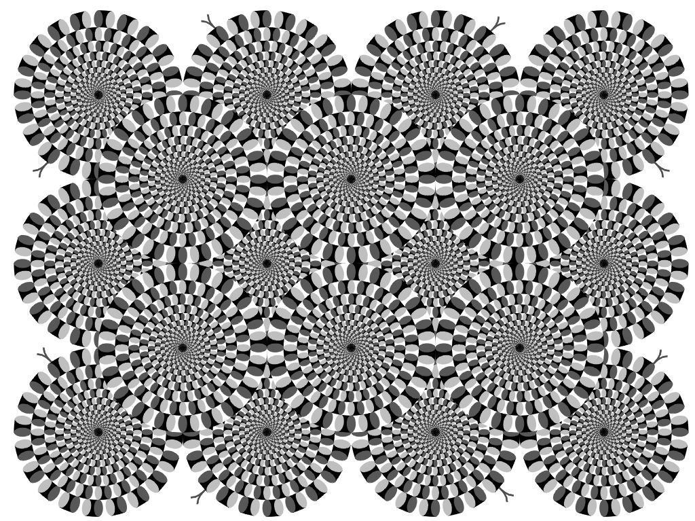

Visualización de datos · UTDT
Tu cerebro no te cuenta toda la verdad
¿Y si nada de lo que ves, elegís y creés fuera tan tuyo como pensás?
Seguí bajando
Bajá
Módulo I
Percepción
No ves lo que creés que ves.
Lo que ves no está en tus ojos: está en tu cerebro.
Primera prueba
Mirá la imagen.
¿Qué ves?
Lo primero que aparezca. Sin pensarlo.

Se reparten casi por la mitad
Qué vio la gente al mirar la figura por primera vez · seguí bajando: las barras crecen con tu scroll
La mitad jura que es un pato; la otra mitad, que es un conejo.
La imagen es siempre la misma. Lo que cambia es el cerebro que la mira.
La pista
Dale vuelta la cabeza.
Seguí bajando: la figura gira y aparece el otro animal.
7 de cada 10 personas cambian lo que ven cuando aparece el contexto.
El dato nuevo no estaba en la imagen: lo puso el contexto. El mismo truco vuelve con tus oídos y con tus decisiones.

No todas las ilusiones
son ambiguas.
Algunas inventan movimiento donde no hay ninguno. Seguí bajando.
Esta imagen está completamente quieta.
Ni un solo píxel se mueve. Y, sin embargo, gira.
Fuente: Kitaoka (2003), “Rotating Snakes”.
De cada 100 personas
0 ven movimiento donde no lo hay.
Tu cerebro agrega una información que no existe. El mismo mecanismo que más adelante va a encontrar caras y fantasmas donde solo hay ruido.
Segunda prueba
No es solo la vista.
También el oído.
Si el cerebro interpreta lo que ve, también interpreta lo que oye. Dale play y escuchá una vez.
¿Qué palabra oíste?
Es el mismo audio para todos.
Lo que oís no depende del sonido: depende de lo que tu cerebro esperaba oír.
Y si te muestro la palabra antes, el mismo audio cambia.
Leer “bicicleta” hace que 8 de cada 10 oigan bicicleta. El mismo truco del contexto —ahora en tus oídos.
Cuanto más seguro estás,
peor ves.
Mirá qué pasó con quienes respondieron con máxima confianza.
El acierto se desploma justo donde más sobra la seguridad.
Esa seguridad que no garantiza nada va a volver: el cerebro que interpreta lo que ve es el mismo que va a interpretar qué le conviene.
Módulo II
Decisión
Elegir también es interpretar.
Tampoco elegís lo que creés que elegís.
Un atajo que casi nunca falla
Un bate y una pelota cuestan $1,10.
El bate cuesta $1 más que la pelota.
¿Cuánto cuesta la pelota?
Tercera prueba
Respondé rápido, sin lápiz ni papel. Después seguí bajando.
Si pensaste $0,10, te pasó lo mismo que a la mayoría. Está mal.
La pelota cuesta $0,05 (y el bate, $1,05). Tu cabeza tiene un sistema rápido —casi siempre alcanza— y uno lento, que casi nunca encendés.
Tiro una moneda
Sale cara +$50
Sale ceca −$50
¿Aceptás el juego?
Una apuesta justa
Ganás y perdés exactamente lo mismo. Decidí con la panza y seguí bajando.
Casi nadie acepta. Para tu cerebro, el juego no es justo.
La rama de las pérdidas se hunde más rápido de lo que sube la de las ganancias.
λ = 2,25×
Perder $50 duele 2,25 veces más de lo que alegra ganarlos. El sistema que grita ante la pérdida (amígdala, ínsula) le gana al de la recompensa.
El mismo problema, dos respuestas
600
personas en riesgo por una enfermedad.
Dos programas. El mismo resultado, contado de dos maneras.
El encuadre
Leé el planteo. Ahora mirá qué pasa cuando lo único que cambia es cómo se cuenta.
Contado en vidas salvadas, elegís lo seguro. En muertes —lo mismo— te arriesgás.
Es el pato-conejo otra vez: el mismo estímulo, leído distinto según el contexto.
Los que menos saben,
más seguros están.
No les alcanza la habilidad ni para darse cuenta de lo que les falta.
Y los mejores se subestiman.
Es la misma curva de la confianza que ya viste. Esa seguridad de más es, justo, la palanca que en el próximo tramo alguien va a aprovechar.
Módulo III
Sesgos
Creer es rellenar lo ambiguo.
Y otros lo saben. Y lo usan.
El 93% se cree mejor
que el promedio al volante.
Es matemáticamente imposible: por definición, solo la mitad puede estar por encima de la media.
No es soberbia: es una ilusión.
El mismo cerebro que vio moverse una imagen quieta se ve a sí mismo mejor de lo que es.
Leé esto con atención.
Es una descripción de tu personalidad. ¿Te sentís identificado?
Es normal: este texto se lo mostramos a todos.
En 1948, Bertram Forer le dio la misma descripción genérica a sus alumnos y la calificaron, en promedio, 4,26 sobre 5 de precisión. Es el truco del horóscopo, del tarot y del psíquico.
Cada frase explota un sesgo distinto.
Tu cerebro completó un texto vago con tu propia vida, igual que le agregó movimiento a una imagen que estaba quieta. La creencia y la ilusión funcionan con el mismo mecanismo: rellenar lo ambiguo.


El cerebro que ve fantasmas.
Somos tan buenos detectando patrones que los vemos donde no hay: una cara en un enchufe, una presencia en una habitación vacía.
El mismo cerebro que encontró movimiento en las víboras quietas encuentra fantasmas en el ruido.
Cada experiencia “paranormal” tiene una explicación conocida: pareidolia, infrasonido, alucinación hipnagógica. Pasá el cursor por las barras.
Más seguros que
los que saben.
Aunque nos equivoquemos, sentimos que tenemos razón —incluso frente a miles de científicos que estudiaron el tema toda su vida.
Y hay industrias que lo saben.
“La duda es nuestro producto”, escribió una tabacalera en 1969. Hoy las mismas técnicas se usan para negar el cambio climático.
Es la ilusión más cara de todas.
Creer que tu percepción del mundo le gana al método que se inventó, justamente, para corregir las ilusiones del cerebro.

No podés apagar la ilusión.
El tablero te va a seguir mostrando dos grises distintos aunque ya sepas que son exactamente el mismo color.
Tu cerebro no te miente para hacerte mal.
Te miente porque construir una versión útil de la realidad es lo único que sabe hacer. Lo hace cuando mirás, cuando elegís y cuando creés.
La única diferencia entre caer en la trampa y verla venir no es ser más inteligente.
Es saber que la trampa existe.
Ahora lo sabés.